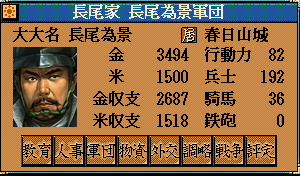

状態名型＆ カスタム::On_状態名表示直前(int 武将番号, int 状態) {
return NULL;
}

状態名型＆ カスタム::On_状態名表示直前(int 武将番号, int 状態) {
// どの武将であっても、対象武将の「状態::大名」に対応する文字列が要求された時、「支配城数が7より多い」場合は「大大名」、「支配城数が1」しかない場合は「小大名」と表示する。
int iBushouID = 武将番号 - 1;
if (状態==状態::大名) {
int iDaimyoID = p武将情報[iBushouID].所属大名【大名番号】 - 1;
if (Get_大名所持城数(iDaimyoID) > 7) {
状態名型 m = "大大名";
return m;
}
else if (Get_大名所持城数(iDaimyoID) == 1) {
状態名型 m = "小大名";
return m;
}
}
return NULL;
}